Dos Pueblos Engineering Academy, Aug 2023 to Jun 2024
Senior capstone: the Origami Penguin Folder
A year-long, four-person project to build a machine that folds paper into a penguin. My piece was the half-fold mechanism, and the gearbox that ran backwards.
Team
4 students, 1 faculty mentor
My part
Led the half-fold mechanism prototype
Result
3 working prototypes, 3 folds
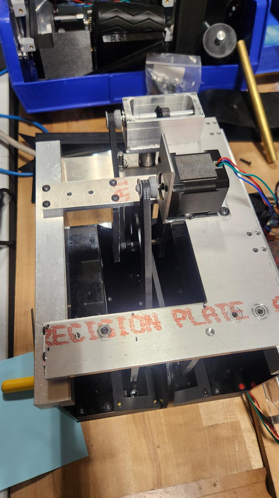
Completed half-fold mechanism, overhead view.
Our challenge was to design and build a machine from scratch that automates the precise art of origami. We took a modular approach to prove a fully mechanical solution could work, and at the end of the year we demonstrated three connected prototypes that complete the first three folds of an origami penguin.
I led the half-fold mechanism, a critical module in the sequence. I owned everything about it: CAD modeling, parts sourcing, machining, assembly, and testing of the power transmission and roller system.
Goals
Build precision machining skills, including edge-finder setups and advanced work on the Hardinge lathe and mills.
Write control logic for a microcontroller that drives motors.
Build and document a complex multi-part system with advanced SolidWorks assemblies and detailed drawings.
Manage a long project, from parts specification to integration with my teammates' modules.
How the year went
Foundation skills and ideas
August to September
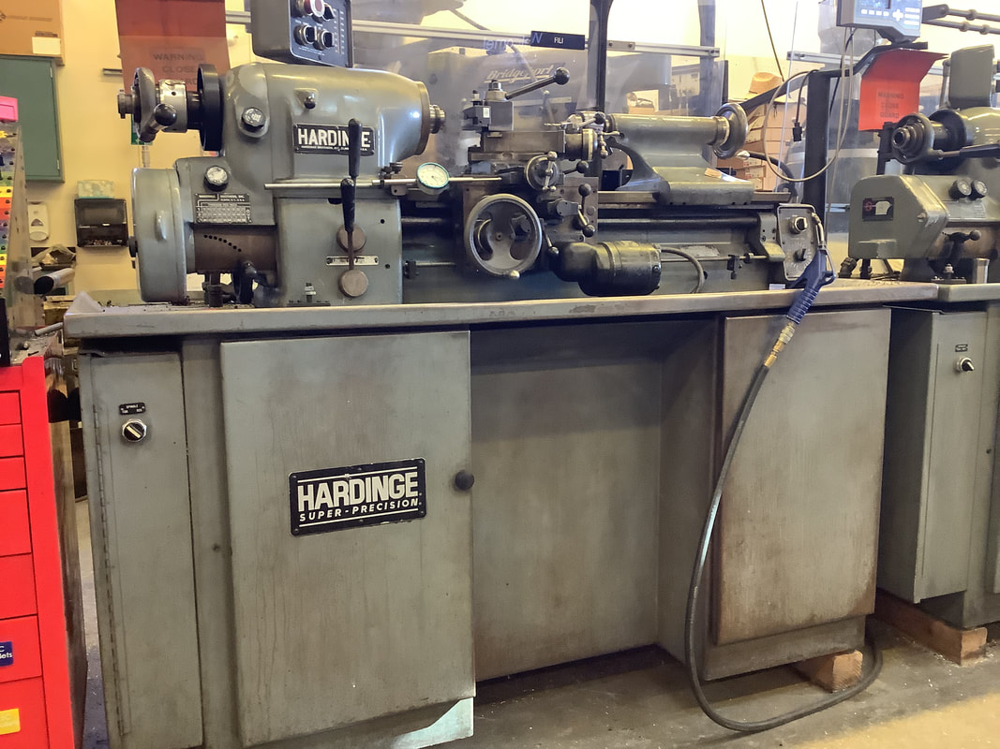
Hardinge lathe, training setup.
I started the year in product development, my first-choice department. Training came first: new mill features like auto-feed, and in-depth Hardinge lathe setups, including building a collet stop in several configurations.
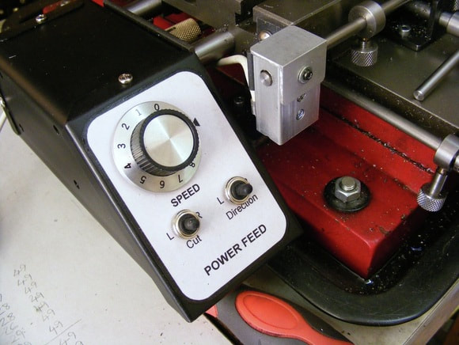
Mill power-feed control, auto-feed training.
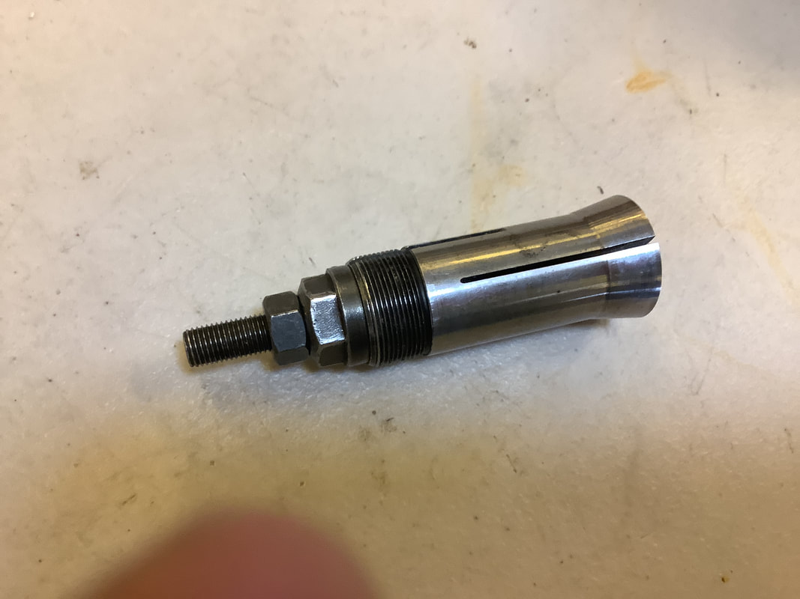
Collet stop, lathe setup.
Our new team's warm-up was a French cleat for the shop's tool wall, designed in CAD and made with the router, manual lathe and laser cutter. Then we chose the big goal: an automated machine built around complex gear systems to fold an origami penguin. To start prototyping, we took apart a salvaged office printer for its rollers, gears and belts.
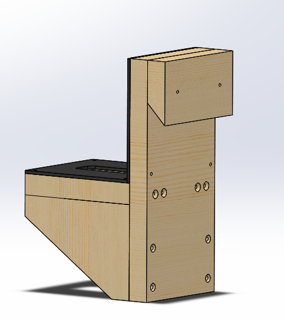
Shop tool-wall cleat, CAD model.
Modular prototyping and system design
October to December
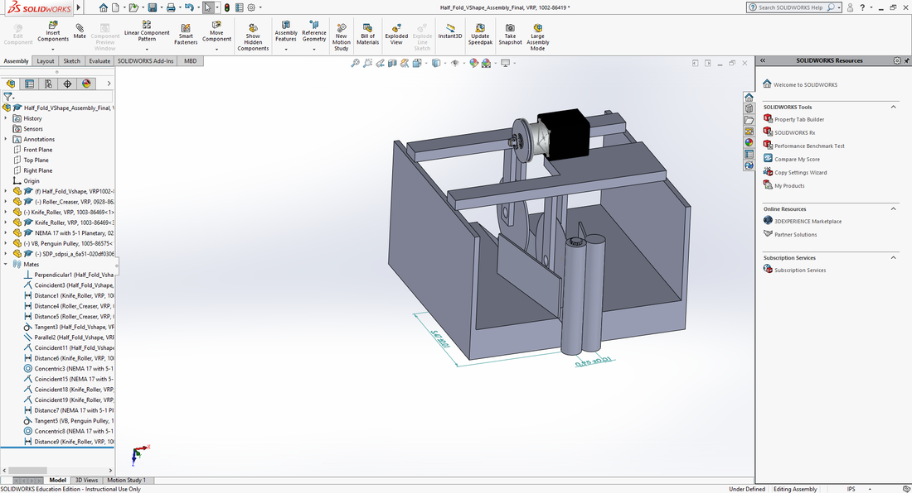
Half-fold mechanism, early assembly model.
Early tests with flat plates failed. Paper has a natural warp and memory, and it resists simple creasing. So in October we dropped a single monolithic design for a modular one, and each of us took ownership of one folding stage so we could work in parallel.
I modeled the first two folds, and by November I was on my second or third iteration of the half-fold mechanism, making it more efficient and easier to assemble. In December I found the core problem of my subsystem: turning vertical rotation from the main drive into the horizontal rotation the rollers need. With my mentor, I decided on a custom miter gearbox.
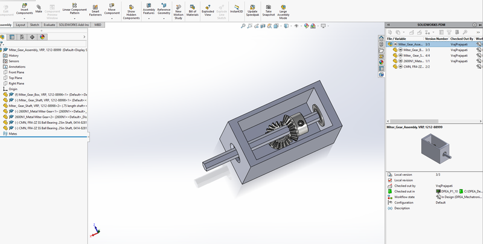
Custom miter gearbox, assembly model.
CAD design and digital iteration
January to March
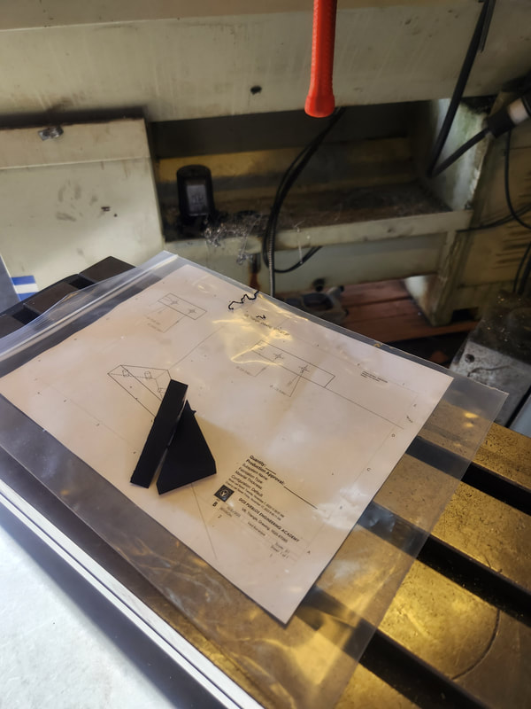
Laser-cut acrylic parts, verification against DXF.
I finalized the CAD for fabrication and made precise DXF files for the laser-cut acrylic parts, nested on a single sheet to save material. A faulty STL file put the holes in the wrong places on my 3D-printed bases, so I made a cardboard template and moved the hole locations back into the model.
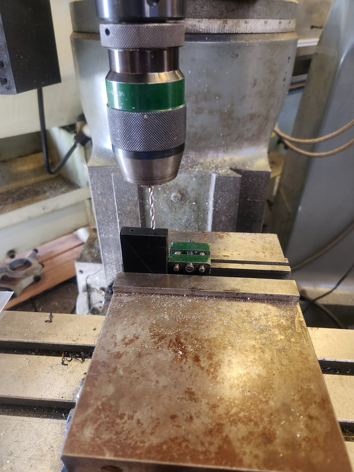
3D-printed base, hole-location correction.
I recalibrated the bevel gearbox for better efficiency and weight distribution on the top plate. When the original hex shaft made gear alignment difficult, I switched to a round shaft so the set screws would seat reliably, and I printed extra D-shaft pulleys to fit the final miter box.
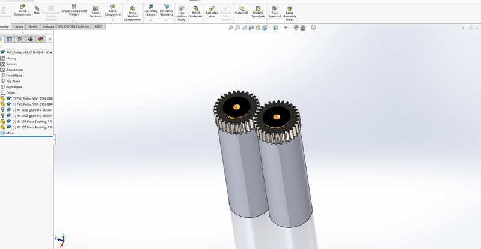
Roller and pulley assembly, CAD model.
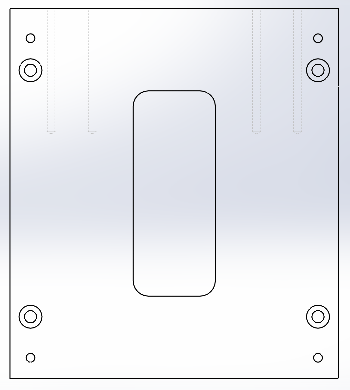
Mounting plate, CAD drawing.
Advanced fabrication and precision machining
February to April
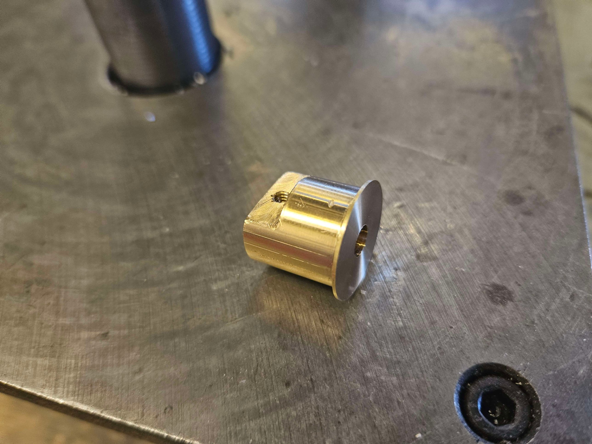
Brass roller insert, lathe-turned.
I turned brass roller inserts on the lathe, using several unconventional setups to hold a tight shoulder tolerance, and I learned to hold round parts in a V-block on the mill. A broach kept jamming on the steel pulleys until I realized my pilot hole was slightly too small, so I re-drilled it and the cut came out clean.
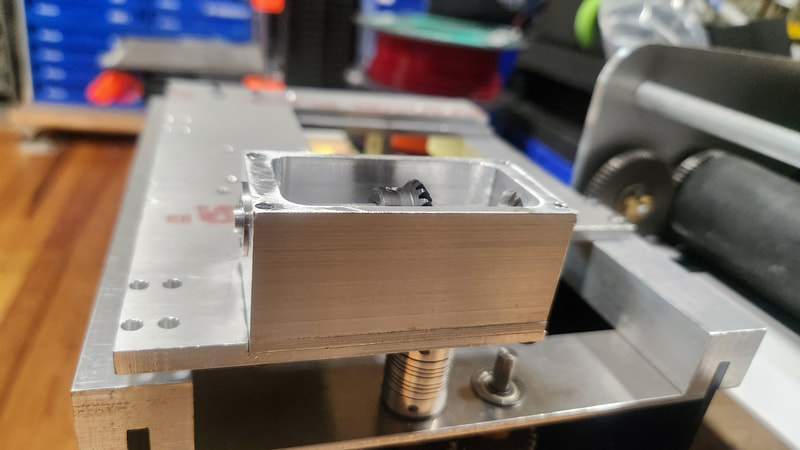
Machined housing, bearing bore.
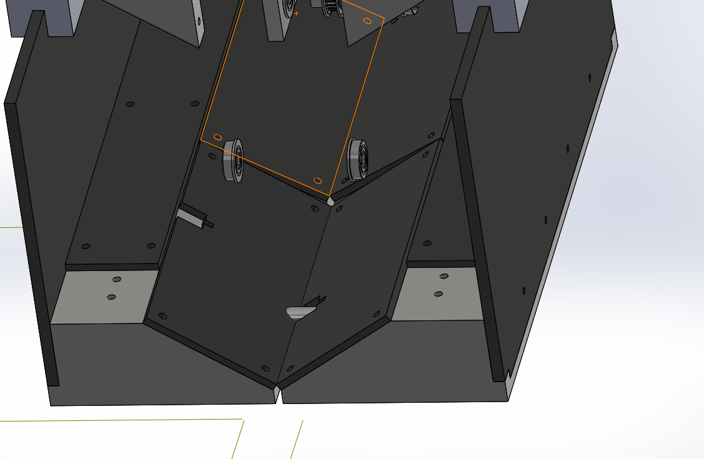
Bearing mount, assembly detail.
In March I made the Delrin passive rollers and worked on the motor mount. The curved L-stock for the motor didn't fit, so I filed and sanded it into a true corner until the motor sat flush.
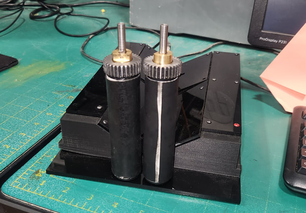
Delrin roller assembly, as built.
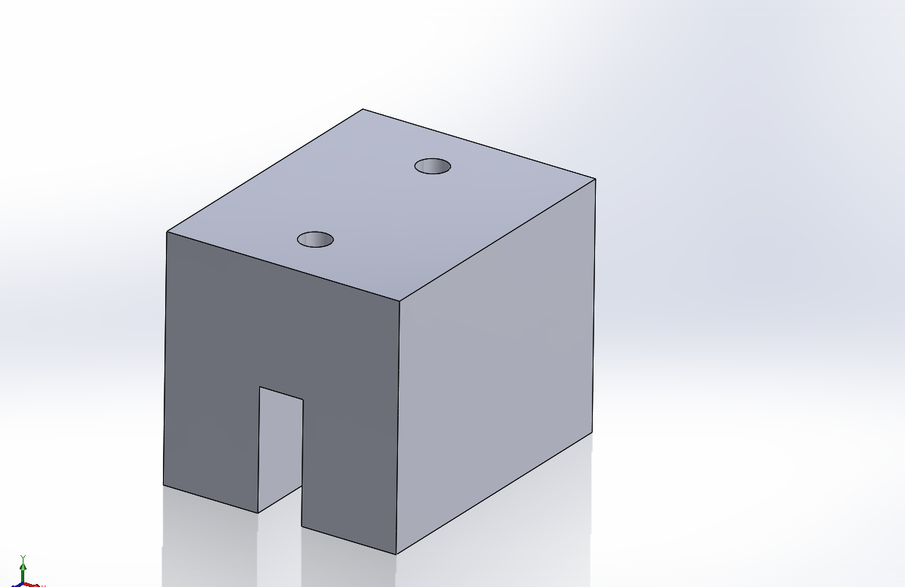
Motor mount bracket, CAD model.
Electronics, assembly and real-world troubleshooting
April to June
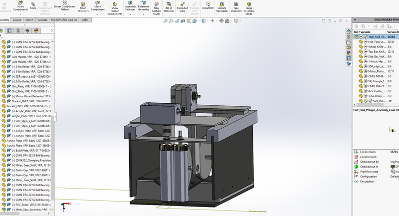
Completed assembly, CAD model.
I ordered transmission belts in the wrong size because of my own miscalculation. That taught me to be exact when I specify parts. While replacements came, I matched spare belts to the existing pitch and width and got ready to 3D-print new pulleys as a backup.
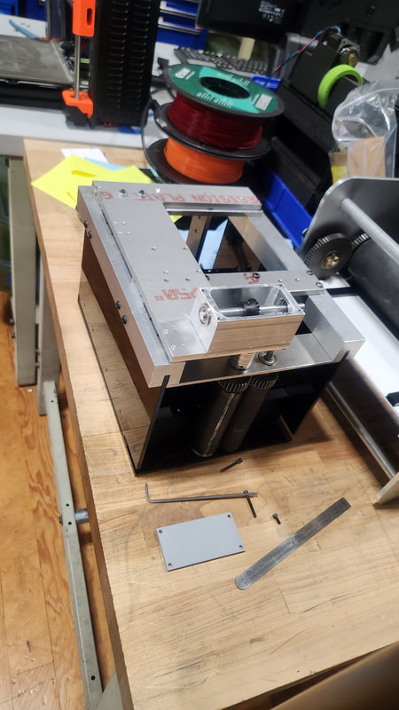
Completed half-fold mechanism, bench assembly.
In May the prototype was fully assembled, and the first test failed. The miter gear transmission had reversed kinematics, so the rollers ejected the paper instead of pulling it in. I did a full root-cause analysis and found the shaft orientation was wrong. I redesigned the shaft and made a new one. In the final weeks, the corrected shaft and new belts went in, and the prototype finally worked as intended. It was a huge relief and a lesson in testing digital designs on real hardware.
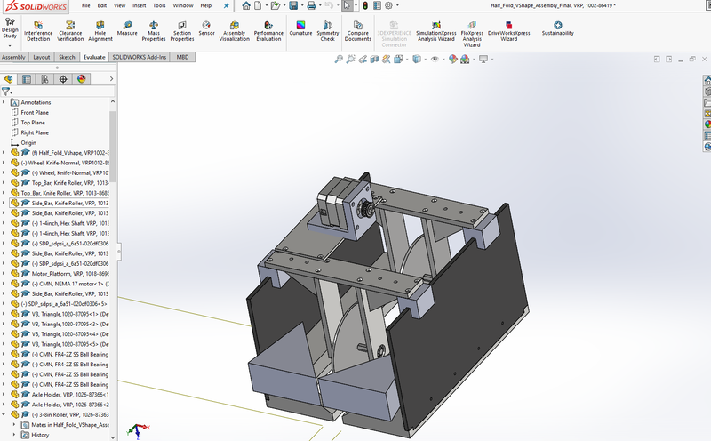
Completed assembly, side view.
Team integration and the showcase
Late May to June
Working with my teammates, I finished the magnetic connection that links a teammate's transition assembly to my half-fold mechanism. When we found that one 3D-printed base was a completely different size, the team shifted components and fixed alignments on the spot to make the modules fit. With my prototype running, I also helped a teammate finish his assembly, including brass inserts.
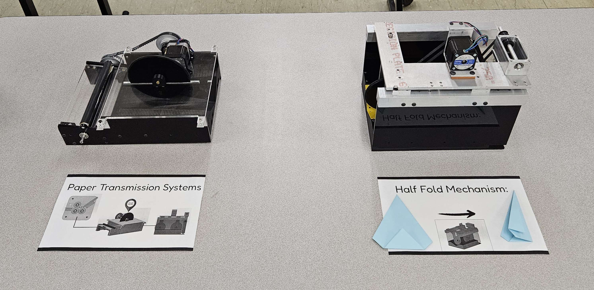
Module demonstration, showcase setup.
In June we presented all three working prototypes to elementary school children and to 9th through 11th graders, in a line that showed the whole process. Many people had doubted the project would get past CAD, which made it satisfying.
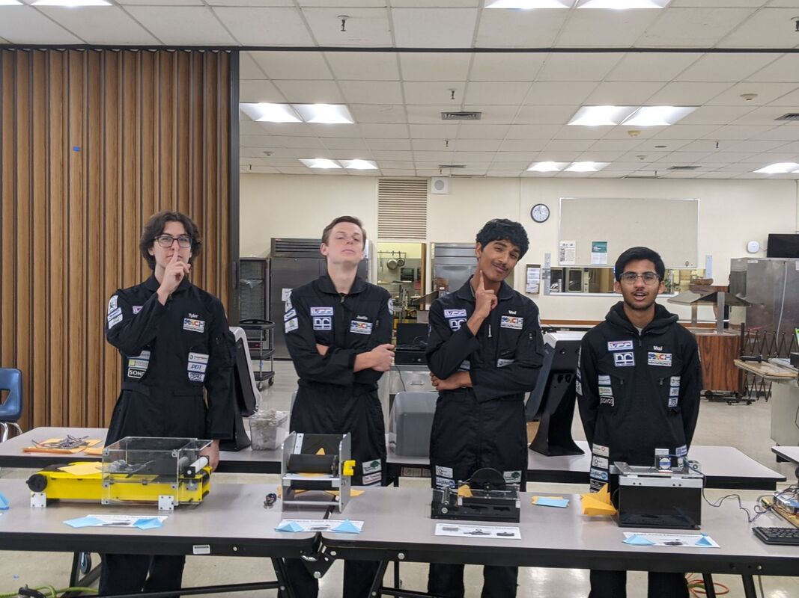
Capstone team, showcase presentation.
What came out of it
The modular approach worked. We built three functional prototypes that execute the first three sequential folds of an origami penguin. That proved a purely mechanical solution is viable for automated paper folding. The project is fully documented so a future capstone team can build toward a machine that folds everything on its own.
Lessons
Digital models need rigorous physical testing. The reversed gearbox made that clear.
Parts sourcing and datasheets deserve a second look. A wrong belt size cost us time.
Defining and managing the mechanical interfaces between modules is real systems engineering.
Delivering on an accelerated timeline sharpened my project management and prioritization.
SolidWorks
Gear design
Lathe and mill
Laser cutting
3D printing
Root-cause analysis
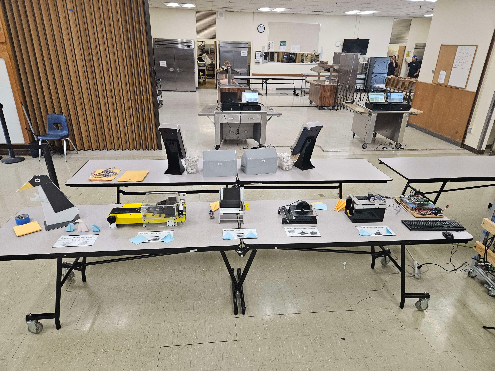
The complete modular system, all four teammates' mechanisms, showcase display.
Gallery
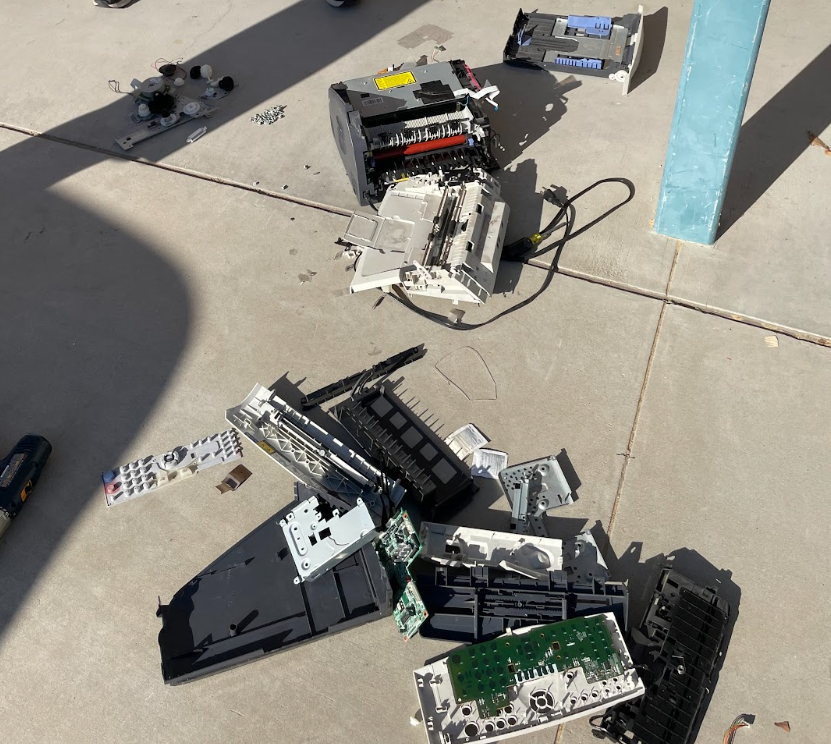
Salvaged printer teardown, roller and gear harvest.